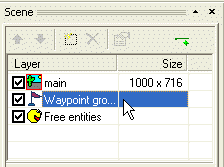
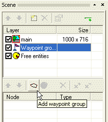
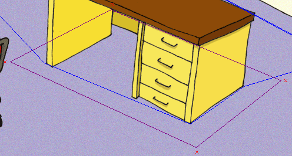
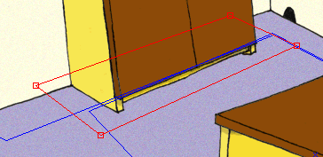
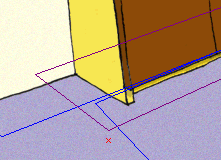
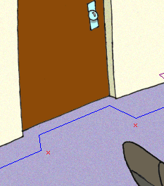
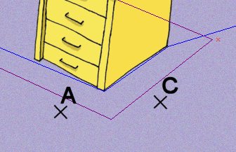
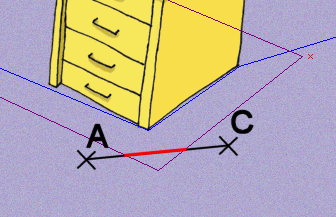
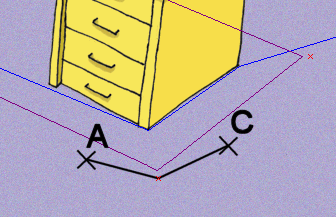

Navigaèní body (waypoint) pomáhají postavám, aby byly schopny se pohybovat po scénì. Postavy dovedou pøejít z jednoho místa na druhé, pakli�e jim v cestì nestojí blokovanı region. Pokud je ve scénì umístìno nìkolik navigaèních bodù a vy øeknete postavì, �e se má pøesunout na urèité místo, ona pak vyu�ije navigaèních bodù k tomu, aby nalezla nekratší mo�nou cestu ze své aktuální pozice do po�adovaného cílového bodu.
V naší testovací scénì nedoká�e postava obejít stùl, a proto ji teï nauèíme, jak na to.
Otevøete scénu "MyScene.scene" v programu SceneEdit. Vlevo v seznamu vrstev vyberte polo�ku "Waypoint groups" (Skupiny navigaèních bodù). Navigaèní body jsou sdru�eny do skupin, proto ten název.

Spodní seznam prvkù se zmìnil. Nyní zobrazuje seznam skupin navigaèních bodù. Kliknìte na tlaèítko "Add waypoint group" (Pøidat skupinu navigaèních bodù).

Byla vytvoøena nová polo�ka s názvem "new aypoints". Zmìòte její jméno napøíklad na "wpt_default". Do skupiny bodù mù�ete pøidávat nové, èi odstraòovat stávající body. Postup je naprosto stejnı, jako kdy� se pøidávají/odstraòují vrcholy regionu, tj. pou�ijte tlaèítka "Add point" (Pøidat bod) a "Remove point" (Odstranit bod).
Pøidáme ètyøi navigaèní body, ka�dı k jednom z vrcholù blokovaného regionu:

Mìjte na pamìti, �e postava je schopna najít cestu k dalšímu navigaènímu bodu, jen pokud do tohoto bodu vede pøímá, nièím neblokovaná cesta.
Tyto ètyøi navigaèní body umo�ní postavì, aby bez problémù obešla stùl. Zkuste si to. Ulo�te scénu, pøepnìte se do ProjectManu a spus�te hru. Jako v�dy vyberte polo�ku "MyScene" a otestujte scénu. Pokud kliknete nìkam za stùl, postava tam dojde a pøitom pøeká�ku inteligentnì obejde.
Ukonèete hru (dvakrát stisknìte Esc) a pøepnìte se zpìt do SceneEditu. Vìnujeme naší scénì ještì trochu práce.
Nechceme, aby postava zacházela a� do skøínì, proto skøíò zablokujeme pøidáním dalšího blokovaného regionu.
V seznamu vrstev vyberte polo�ku "main" a poté kliknìte na tlaèítko "Add region" (Pøidat region). Zmìòte jméno regionu na "block_closet" a pøepnìte rádiové tlaèítko do polohy "Blocked". Nyní u� jen zmìòte tvar regionu tak, aby se rozprostíral kolem skøínì:

Jak vidíte, tøi vrcholy regionu le�í mimo oblast, dostupnou pro postavy, ale levı spodní vrchol le�í uvnitø. Proto musíme pøidat jeden navigaèní bod, aby byla postava schopna obejít roh skøínì.
V seznamu vrstev zvolte polo�ku "Waypoint groups" a v seznamù prvkù poté vyberte skupinu, kterou jsme pojmenovali "wpt_default". Kliknìte na tlaèítko "Add point" (Pøidat bod) a umístìte novı navigaèní bod poblí� vrcholu regionu, blokujícího skøíò (viz obrázek).

Postava bude nyní vyu�ívat tento navigaèní bod, aby byla schopna obejít skøíò.
Ve scénì mù�ete najít ještì další dva "vıènìlky" (ostré úhly), které postava nebude schopna obejít. Jsou poblí� dveøí. Pøidejme další dva navigaèní body:

Na závìr pøidám ještì jeden pøíklad, kterı by vám mìl lépe objasnit, jak navigaèní body fungují. Pøedstavte si následující situaci: Postava stojí nìkde ve scéne (bod A) a hráè kliknul na podlahu (bod C):

Pøímá spojnice z bodu A do bodu C neexistuje, proto�e v ceste stojí blokovanı region. Pokud by ve scénì nebyl navigaèní bod, postava by nedokázala najít cestu do bodu C:

Nicménì po pøidání navigaèního bodu dojde postava nejprve do nìj a poté u� "vidí" pøímou cestu do bodu C:

A to je o navigaèních bodech vše. Ulo�te scénu a ukonèete SceneEdit. Pokud scénu otestujete, uvidíte, �e postava u� nebude mít problém dojít do kteréhokoliv místa. Navíc by v�dy mìla volit nejkratší mo�nou cestu.
Ovšem stále nám postava chodí po �idli a ani její velikost pøíliš neodpovídá mìøítku scény. Pokraèovat budeme v kapitole Krok 6: Volné entity, úrovnì zvìtšení a dekoraèní regiony.